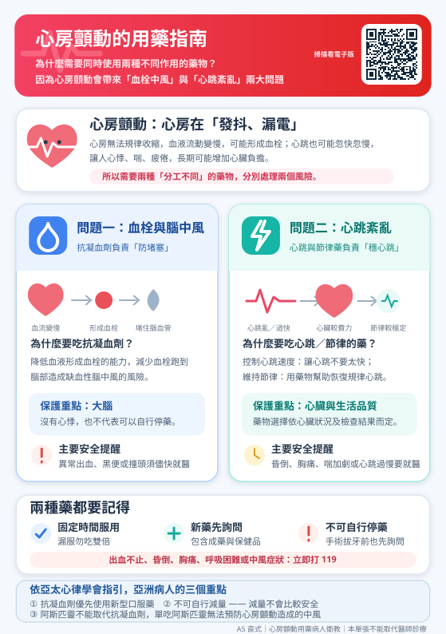
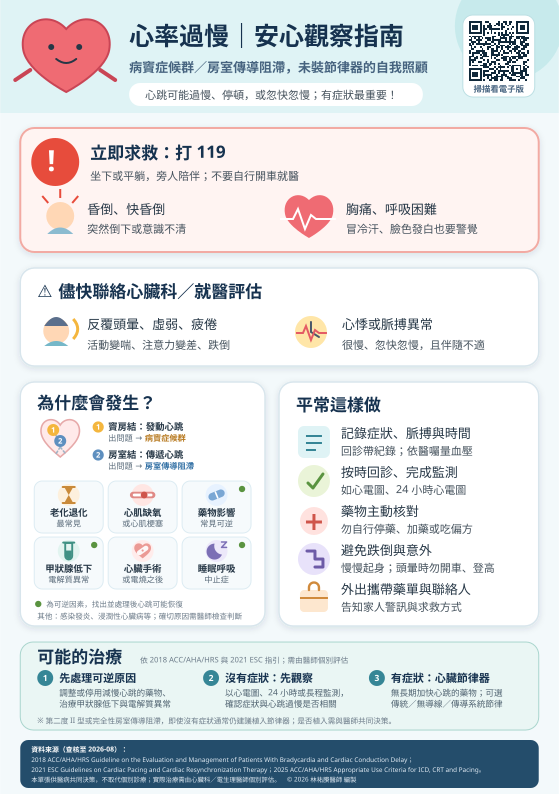
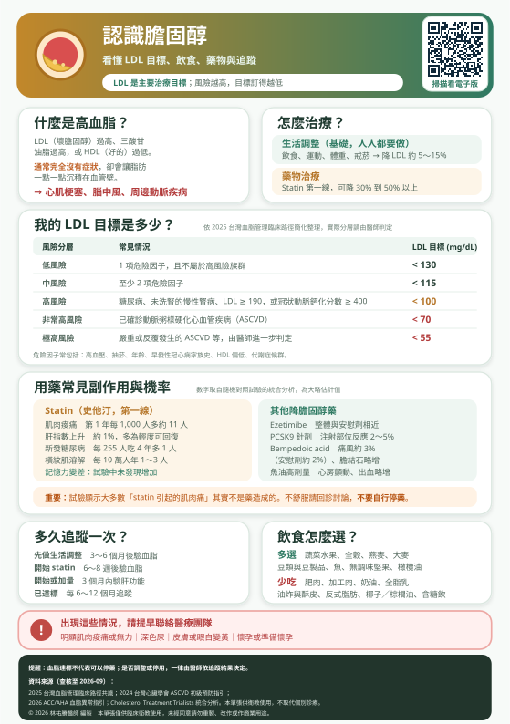
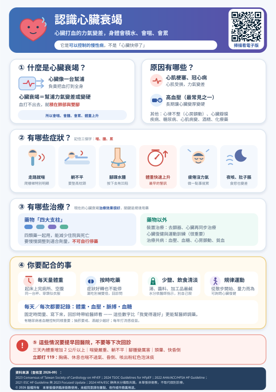
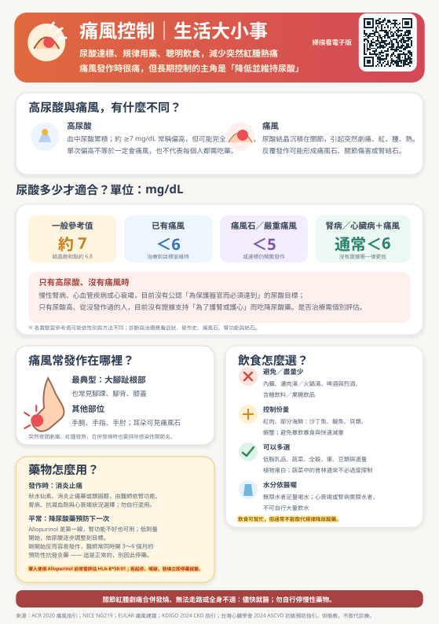

病人衛教資訊圖表
心臟科與代謝相關的 A5 衛教單張，可放大檢視或下載列印。每一張都有展開說明的詳細版。每張單張右上角的 QR code 會連到這裡的對應頁面。
語音版｜十大主題有聲衛教 十個主題都有語音朗讀，可逐段播放、暫停與重播，字體較大，適合長輩與視力不便者。 前往 →
認識心房顫動
什麼是心房顫動、為什麼會中風、抗凝血藥怎麼吃（附詳細版）

心房顫動的用藥指南
為什麼要吃兩種藥、抗凝血藥怎麼吃、亞洲人的用藥考量（附詳細版）

心房顫動｜心律不整電燒手術
適合對象、成功率、兩種技術比較、健保與自費費用（附詳細版）

認識心室上頻脈
什麼是 SVT、四種型態、症狀與誘因、發作當下怎麼辦、藥物與電燒治療（附詳細版）

心率過慢｜安心觀察指南
病竇症候群／房室傳導阻滯，未裝節律器的自我照顧（附詳細版）

裝置心臟節律器｜生活注意事項
傷口照顧、手臂活動、電器與安檢、核磁共振、電池（附詳細版）

血壓控制｜生活大小事
居家 722 怎麼量、血壓目標是多少、為什麼血壓正常還要吃藥（附詳細版）

姿態性低血壓｜起身不暈
為什麼一站起來就暈、藥物的影響、起身不暈的小動作（附詳細版）

認識膽固醇
看懂血脂報告、我的 LDL 目標、飲食能降多少、用藥副作用與機率（附詳細版）

認識心臟衰竭
什麼是心臟衰竭、症狀與原因、四大支柱治療、每天要量什麼（附詳細版）

痛風控制｜生活大小事
尿酸要降到多少、發作怎麼辦、華人的 HLA-B*58:01 檢查（附詳細版）